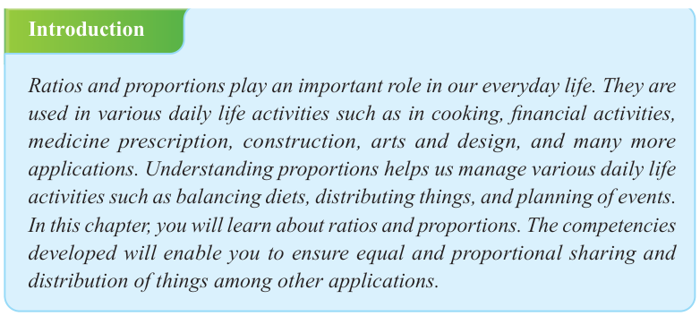
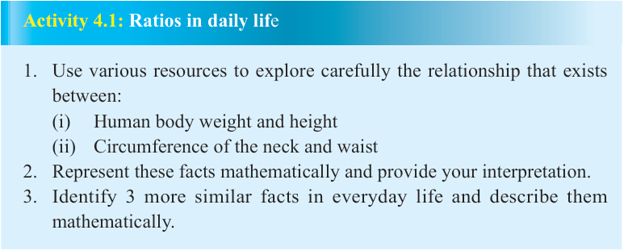

Chapter Four
Ratios and proportions

Introduction
Ratios and proportions play an important role in our everyday life. They are used in various daily life activities such as in cooking, financial activities, medicine prescription, construction, arts and design, and many more applications. Understanding proportions helps us manage various daily life activities such as balancing diets, distributing things, and planning of events. In this chapter, you will learn about ratios and proportions. The competencies developed will enable you to ensure equal and proportional sharing and distribution of things among other applications.
Ratios
Sharing things is a common practice in our life. For example, people can share portions of land, wealth, and many other things. A required portion of water, fruit paste and sugar can result into a nice juice. Activity 4.1 introduces you with some everyday uses of ratios.

Activity 4.1: Ratios in daily life
1. Use various resources to explore carefully the relationship that exists between:
-
(i) Human body weight and height
-
(ii) Circumference of the neck and waist
2. Represent these facts mathematically and provide your interpretation.
3. Identify 3 more similar facts in everyday life and describe them mathematically.
A ratio is a quantitative comparison between two or more quantities of the same units, normally expressed as a fraction. It shows the number of times one value contains the other. A ratio between the numbers and is written as , which is equivalent to or and is read as to . It should be noted that multiplying